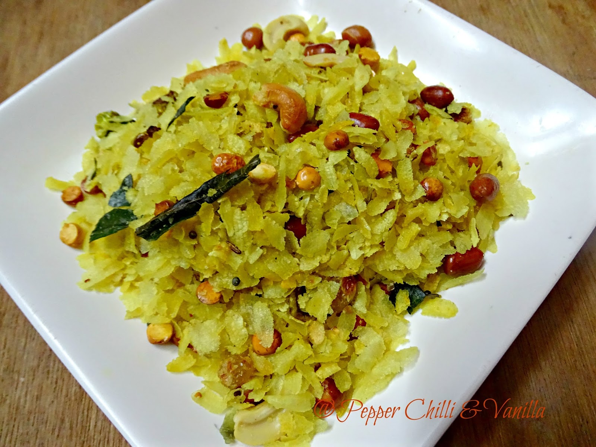

How to make Chiwada

Description:-
Chivda is a classic treat that is often enjoyed during Diwali. There are so many unique ways to prepare these snacks for any and all celebrations, and they are known by several other names like farsan and namkeen.
Ingredients of Chiwada:-
- 3 cup thin poha / aval / avalakki / beaten rice
- 2 tbsp oil
- ¼ cup peanuts
- 2 tbsp gram dal / pottukadalai / putani / dariya
- 10 cashew / kaju (halves)
- 2 tbsp dry coconut (chopped)
- 1 tsp mustard
- 1 tsp cumin / jeera
- 2 dried red chilli (broken)
- pinch hing / asafoetida
- few curry leaves
- ¼ tsp turmeric
- ¼ tsp salt
- 1 tsp powdered sugar
Directions:-
- firstly, in a tawa dry roast 3 cup thin poha on medium flame. alternatively, microwave for 1 minute or keep under a hot sun for 30 minutes.
- roast until poha turns crisp. keep aside.
- now in a large kadai heat 2 tbsp oil and roast ¼ cup peanuts to golden and crunch.
- also roast 2 tbsp pottukadalai, 10 cashew, 2 tbsp dry coconut on low flame.
- now add 1 tsp mustard, 1 tsp cumin, 2 dried red chilli, pinch hing and few curry leaves.
- saute and splutter the tempering.
- now add ¼ tsp turmeric, ¼ tsp salt and 1 tsp powdered sugar.
- furthermore, add roasted poha and mix gently.
- finally, serve poha chivda or store in an air tight container for a month.
Back To Main Page